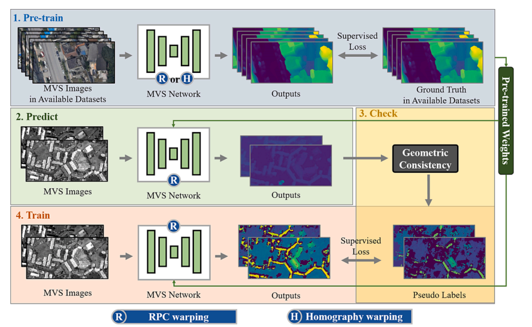
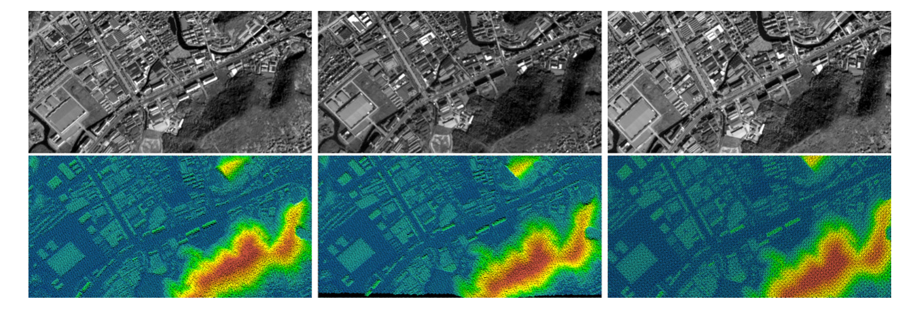

|
Jian Gao jian_gao@whu.edu.cn Master Graduate at Wuhan University, Hubei, China [GoogleScholar] More details can be found through my resume |
|  |
Jian Gao, Jin Liu, Shunping Ji A general deep learning based framework for 3D reconstruction from multi-view stereo satellite images ISPRS Journal of Photogrammetry and Remote Sensing 2023 [Paper] [Code] |
|  |
Jian Gao, Jin Liu, Shunping Ji Rational Polynomial Camera Model Warping for Deep Learning Based Satellite Multi-View Stereo Matching 2021 IEEE/CVF International Conference on Computer Vision (ICCV) 2021 [Paper] [Code] |